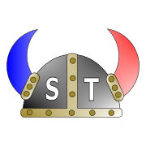
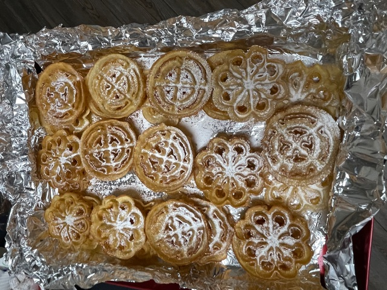

Oktober 15th was our Autumnal Auction! We also enjoyed viewing the large Bordsen pumpkins!
We have Lodge Officer positions open for 2027, so contact President Keith Bordsen if you're interested in being a volunteer.
Veterans Day Parade will be November 11 at 10 AM.
Join us for BINGO on November 12 at Noon.
On November 15th,enjoy "A Little Princess" at the acting company at 2 PM.
District 6 Christmas Party will be November 29th at 3 PM.

I Jesu navn går vi til bords, og spiser, drikker på ditt ord. Deg, Gud til ære, oss til gavn, så får vi mat i Jesu navn. Amen.
Translation: In Jesus Name we go to the Table to eat and drink at thy Word; in God's Honor and for our Benefit we receive the Food in Jesus Name, Amen.
Rosettes

A deep saucepan or automatic deep fryer and a rosette iron will be needed.
Beat very slightly with a fork: eggs, salt, and sugar. Add and beat until smooth: milk and flour. Heat fat to 365°. Heat iron in fat before dipping it into batter. When iron is hot enough, dip in batter to within ¼ inch of top of iron. Return to hot fat, covering iron entirely for 20-35 seconds, or until delicately browned. When brown, drain over fat a few seconds. Using tip of a sharp knife, carefully remove rosette from iron. Drain on absorbent paper. Sprinkle with powdered sugar.
Hints: If rosette is difficult to remove from iron, it has not been fried long enough. If fat blisters are present, eggs have been beaten too long. If batter drops from iron, it is not deep enough in fat or iron is too hot. If rosette is not crisp, it has been fried too fast.
From Sons of Norway's Scandinavian Cook BookJa, vi elsker dette landet,
Som det stiger frem,
Furet, værbitt over vannet,
Med de tusen hjem,
Elsker, elsker det og tenker,
På vår far og mor,
Og den saganatt som senker,
Drømmer på vår jord,
Og den saganatt som senker,
Senker drømmer på vår jord.